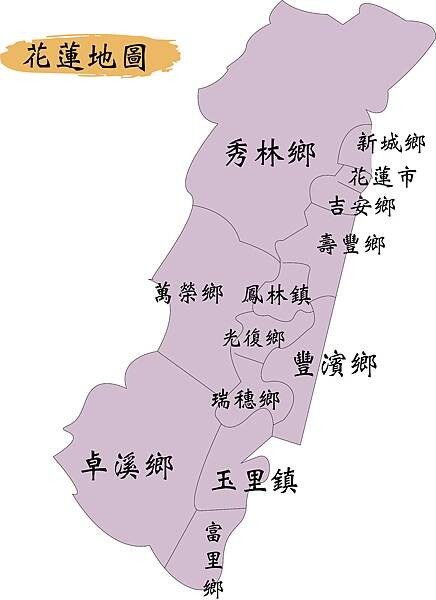

景點匯總

網路參考資料
花蓮地區 推薦必去景點 2020年更新
- 1.秀林鄉
- 2.新城鄉
- 1.七星潭,
- 2.四八高地,
- 3.曼波海灘
- 3.花蓮市
- 1.東大門夜市,
- 2.松園別館,
- 3.花蓮文創園區,
- 4.撒固兒步道
- 4.吉安鄉
- 1.慶修院,
- 2.貨櫃屋星巴克/新天堂樂園,
- 3.台開心農場,
- 4.楓林步道
- 5.壽豐鄉
- 1.鯉魚潭,
- 2.遠雄海洋公園,
- 3.七七高地,
- 4.雲山水 生態溼地園區,夢幻湖,
- 5.牛山呼庭,
- 6.東華大學,
- 7.山度空間,
- 8.理想大地,
- 9.立川漁場,
- 10.海崖谷,
- 11.山姆先生咖啡館
- 6.豐濱鄉
- 1.親不知子天空步道,
- 2.石梯坪,
- 3.新社梯田,
- 4.石門班哨所,
- 5.石門麻糬洞
- 7.瑞穗鄉
- 1.秀姑巒溪泛舟,
- 2.瑞穗牧場,
- 3.吉蒸牧場
- 8.玉里鄉
- 1.赤柯山
- 9.富里鄉
- 1.六十石山
- 10.光復鄉
- 1.拉索埃湧泉生態園區,
- 2.光復糖廠,
- 3.大農大富平地森林園區,
- 4.吉利潭遊憩區